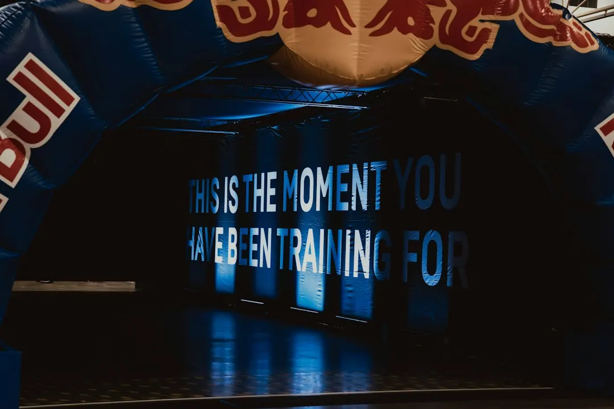

Clubs & Causes lists cross-checked organisations across nine provider types, with categories including charities and causes, community clubs and groups, sporting clubs, arts and culture, and other community-focused areas. For an event sponsorship search, start with purpose and location, then compare each organisation's description, reviews, requested contribution and response. Confirm participation, timing, recognition and responsibilities directly before treating any proposal as agreed.
For organisations researching event sponsorship australia opportunities, the practical starting point is to compare the cause, community setting, location and proposed contribution before approaching a potential partner.
Event Sponsorship Australia Explained
Clubs & Causes presents sponsorship research through community organisations, charities, clubs and groups. Begin with a short brief stating what the event supports, who it is for and what contribution is being requested. A cause-led event may need financial, practical or promotional support, while a club activity may be seeking participation, equipment, services or a venue contribution. The request should be specific enough for an organisation to assess.
Use the closest category as a search starting point. The published options include Arts and Culture, Charities and Causes, Community Clubs and Groups, Education and Families, Emergency and Service, Environment and Wildlife, Faith and Multicultural, Sporting Clubs, and Veterans and RSL.
- Write the event purpose in one sentence.
- Identify the community, cause or club activity that benefits.
- Separate the support requested from the recognition offered.
- Record the event location and decision date.
Screen listings by relevance and location
A listing can narrow the search, but it cannot establish whether sponsorship is available. The website says readers can review cross-checked listings, compare services, read reviews and request quotes for free. Read the organisation description first, then test whether its stated work relates to the event audience and proposed contribution.
Location can matter when the event depends on local participation, an in-person role or knowledge of a particular community. The location view includes Tasmania, the Australian Capital Territory, the Northern Territory, South Australia, Western Australia, Queensland, New South Wales and Victoria. The displayed counts differ by state, so location may affect the size of the initial shortlist. It should not be used as a substitute for asking what the organisation can actually provide.
Reviews are useful prompts for further questions. Compare them with the category, description and direct response before selecting an organisation.
Compare the proposed contribution
Different arrangements need different questions. A charity or cause may be relevant where the event has a social, environmental or community purpose. A club or group may suit an event involving members, local participation or a community program. An in-kind proposal may involve equipment, expertise, space or another practical input.
Ask what the organisation would contribute, who would deliver it and what the event would provide in return. Where recognition is proposed, clarify its wording, placement and approval. Record any agreed contribution, responsibilities and timing in writing before promoting the relationship.
Prepare a focused enquiry
A complete enquiry gives an organisation enough context to decide whether to respond. Include the event purpose, proposed date or timing, location, audience, expected attendance if known, support requested and recognition offered. Mark provisional details clearly if planning is incomplete.
- Is the organisation open to event-related sponsorship or participation?
- Does the event align with its stated purpose?
- Is the requested support financial, practical, promotional, participatory or combined?
- What information or approval is needed before a decision?
- What recognition can be discussed, and who approves its use?
If requesting a quote, state what the quote should include and what remains the organiser's responsibility. Keep responses together so proposed terms can be compared consistently.
Who this guide applies to
This guide suits event organisers, businesses, community groups and individuals comparing possible sponsorship relationships in Australia. It also helps someone looking for a club, charity, cause or community organisation connected to an event idea. The listings span multiple categories and locations, but each proposed arrangement still requires direct confirmation.
For an early search, prepare the brief, choose the closest category, shortlist organisations with relevant descriptions, and ask a focused question about contribution and fit. For a related club-focused comparison, see the guide to club sponsorship in Australia.
- Define the event. Write the purpose, audience, location, timing and requested contribution in a short brief.
- Choose a category. Use the published categories to narrow the search according to the event's purpose and participants.
- Build a shortlist. Compare descriptions, locations and reviews without assuming that a listing confirms suitability.
- Ask focused questions. Confirm fit, contribution, participation, timing, recognition and approval requirements.
- Record the terms. Keep confirmed responsibilities and agreed recognition in writing before publicising the arrangement.
| Approach | Useful when | Confirm before proceeding |
|---|---|---|
| Cause or charity alignment | The event has a social, environmental or community purpose | What activity does the organisation support, and how would the event relate to it? |
| Club or group participation | The event involves members, local participation or a community program | Who participates, what support is expected, and what outcome is intended? |
| Service or in-kind support | The request concerns equipment, expertise, space or another non-cash input | What is available, when can it be supplied, and who handles delivery? |
Common questions
How many provider types are listed? The page states that it provides cross-checked listings across nine provider types, including charities and causes, community clubs and groups, sporting clubs, arts and culture, and other community-focused types.
Can the listings be searched by location? Yes. The website provides location browsing across all Australian states and territories. Location narrows the search, while the organisation's description and direct response determine fit.
Does a listing confirm that sponsorship is available? No. A listing is a starting point for research. Ask whether the organisation considers event-related support, what contribution may be possible and what terms would apply.
What should an enquiry include? Include the event purpose, audience, location, timing, requested support and proposed recognition. Identify which details are confirmed and which remain provisional.
Are reviews enough to choose an organisation? No. Reviews may guide questions, but suitability depends on the organisation's stated purpose, the event's needs and the terms confirmed directly.
This guide covers how to compare Australian clubs, causes and community organisations for a potential event sponsorship enquiry.